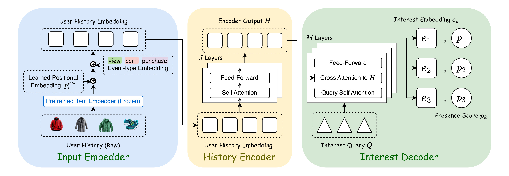
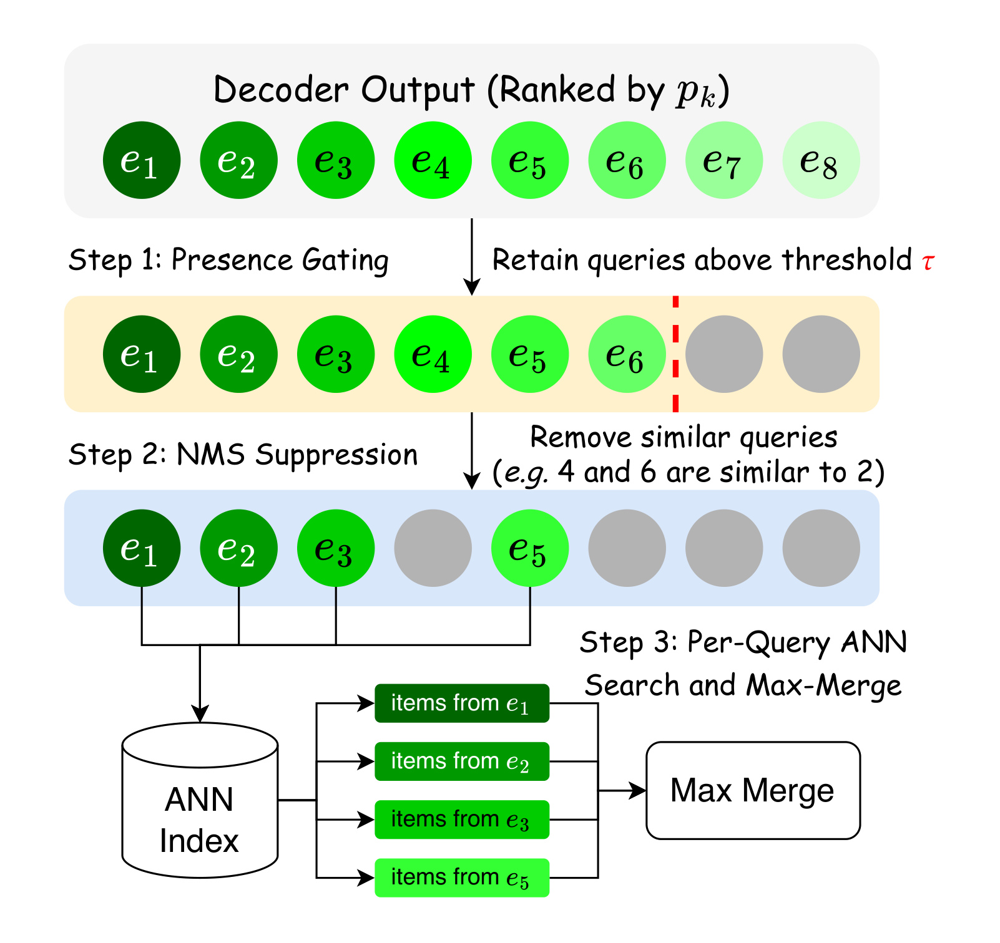
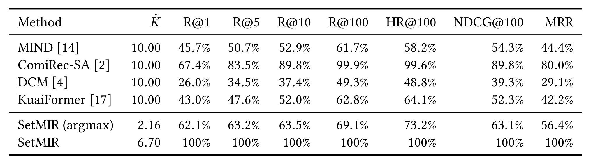
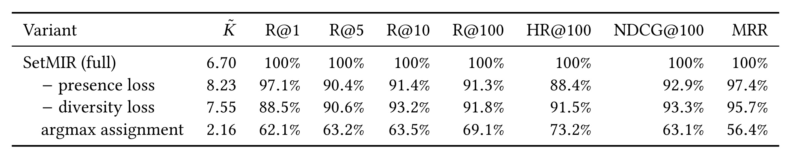
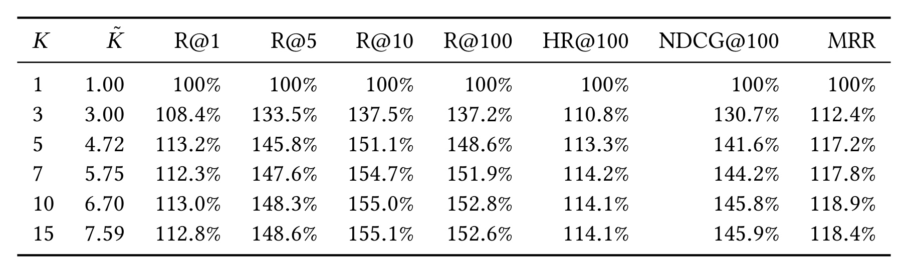
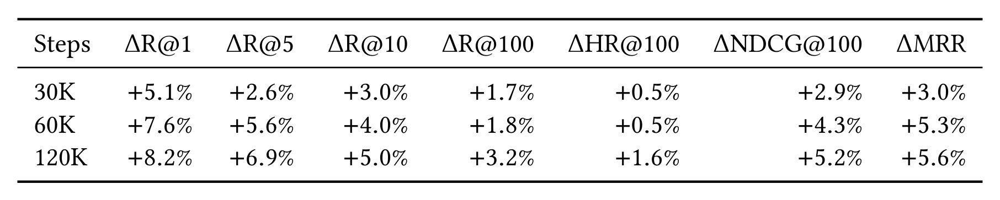
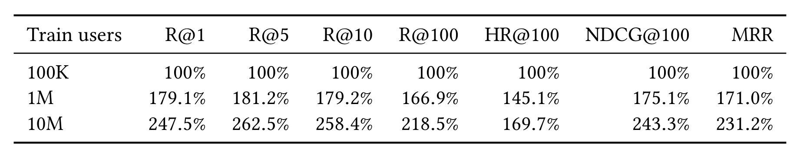
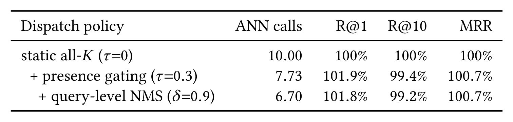
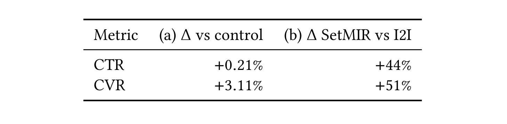
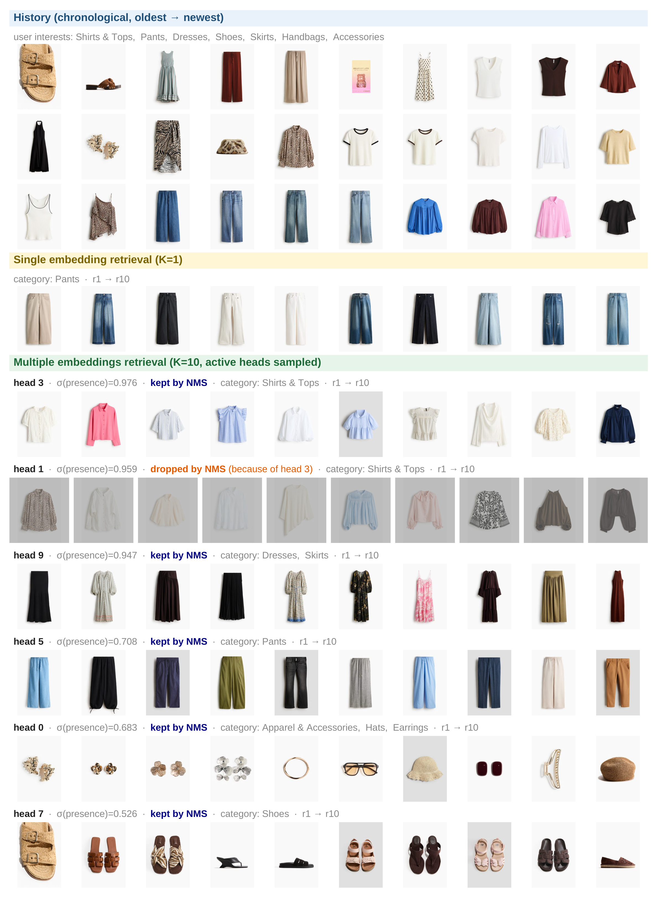

SetMIR：把多兴趣召回建模为集合预测
SetMIR 是 Snap Inc. 的 Xiaodong Liu、Congfei Zhang、Hsiang-wei Chao 等 16 位作者针对工业多兴趣召回提出的方法。论文于 2026 年 8 月 31 日以 arXiv v1 公开，稿件标注为“KDD 2027 ADS Track, Under Review”，因此不应解读为已录用论文。唯一论文入口是 arXiv:2608.30251；本轮没有核验到独立的代码仓库或项目页。
现有多兴趣召回同时受制于两个相互关联的缺口：训练中多个目标可以挤到同一查询上，使其他查询得不到检索梯度而塌缩；服务时又固定发出 K 次 ANN 检索，即使某些兴趣向量当前无效或彼此重复，仍会占用召回预算。
1. 背景和问题
大规模推荐往往先从上亿商品中召回几千个候选，再交给更重的排序模型。两塔召回把商品离线编码并建立 ANN 索引，在请求到来时用一个用户向量查询。这种做法工程上简洁，但“一个向量”必须将相异的短期与长期兴趣平均进同一个点。论文举的例子是：用户同一周可能同时关注街头服饰、婴童衣物和护肤品，平均表示容易追随占比最高的类别，让窄但当下重要的意图消失。
多兴趣召回因此为每个用户生成 $K$ 个向量，分别发起 ANN 查询后合并结果。MIND 用胶囊路由，ComiRec-SA 用多头自注意力，DCM 做可微聚类，KuaiFormer 则将可学习查询 token 放入历史 Transformer。这些方法的共同目标是把不同行为族分开，但常见训练规则仍是让每个正样本独立选择相似度最高的查询。这不是一对一分配：多个目标可以同时选中已经较好的头，其他头既没有正样本，也没有“当前不存在该兴趣”的负监督，强者更强后只剩少数有效兴趣，这就是 interest collapse。
把这个过程写得更精确一些：若未来时窗内有 $W$ 个高意图商品，逐目标 argmax 允许 $W$ 个目标都把同一个 query 当正样本出口。即使 $W\ge K$，也不保证 $K$ 个槽位都收到检索梯度；一旦某个头在随机初始化后更接近多个热门目标，它会在后续更容易胜出。单纯在查询向量之间加排斥项可以改变几何位置，却无法保证训练样本的责任不重叠。SetMIR 选择的是更底层的修正：先用组合优化为每个目标找不冲突的槽位，然后再定义检索损失与缺席监督。
第二个问题出现在训练之后。多数系统对每个请求都发出固定 $K$ 次 ANN 检索，再把总候选预算 $N$ 分摊给所有查询。如果用户当前只有三个清晰意图，其余头要么低质量，要么与已有头高度相似；它们仍然会分走检索深度、发起索引调用，并向合并集中引入冗余候选。辅助多样性正则能拉开向量，却不直接回答“这个用户本次到底需要多少次查询”。
静态派发不仅是多几次近邻搜索的问题。当总配额保持为 $N$ 时，给冗余头分配 $N/K$ 个槽位，就意味着对真正活跃的长尾兴趣检索得不够深；当每个头各取固定深度再去重时，则会增加总候选处理成本。查询间的相似性还可能让多个头召回同一批热门商品，其表面上有 $K$ 路检索，实际候选增量却很小。因此 SetMIR 将调度拆为两个不可互换的判断：presence 判断这个意图是否被本次请求支持，NMS 则在已支持意图中判断两个向量是否过度近似。
论文还特别区分了 SetMIR 和 ColBERT 式多向量检索：后者常在文档侧保留多向量并做 late interaction，SetMIR 的多重性只放在用户侧，每个商品仍是单向量，因而可以复用现有 ANN 索引。它也没有用 Gumbel-Softmax 选固定 top-$M$ 头：固定 $M$ 仍不能表示用户兴趣数量的请求间差异，还要处理温度退火和直通估计。presence 头直接输出可变数量的活跃查询，更符合工业服务对请求级成本控制的需求。
SetMIR 的核心转换是把多兴趣召回从“$K$ 个独立头”改写成“固定查询槽位预测可变长集合”。它借用 DETR 式的可学习 query bank、Hungarian 匹配和未匹配查询的缺席标签，但预测对象不是边界框，而是冻结商品向量空间中的检索方向；未匹配也不表示永久“无兴趣”，只表示未在未来高意图时窗内观察到更多目标。这一差异很关键，因为 presence 分数不只是训练分类头，它最终直接决定服务端要不要发起一次 ANN 调用。
这个类比也提醒我们不要把“未匹配”解读成真实世界的负样本。物体检测的标注通常追求图像内穷尽，而推荐日志只显示被曝光、被点击且在特定时窗转化的部分偏好。SetMIR 实际学到的是“本数据收集机制下，未来三天是否有一个高意图目标需要占用该槽位”。它对短期广告召回很合适，却可能将长周期、低曝光或未转化兴趣压低。这不否定方法，但它是迁移到新场景时必须重新校准目标时窗和事件强度的原因。
2. 方法
2.1 把多兴趣召回写成可变长集合预测
用户 $u$ 的按时间排序历史记为 $H_u=[v_1,\ldots,v_L]$，每个 $v_i$ 同时包含商品和交互类型。最近时窗中的购买、加购、swipe-up 等高意图商品组成目标集 $T_u=\{t_1,\ldots,t_W\}$，而时窗之前的事件作为输入。$W$ 随用户而变且推理时不可知，因此模型从固定 $K$ 个查询槽位中预测 $P_u=\{(e_k,p_k)\}_{k=1}^{K}$：$e_k$ 是检索向量，$p_k$ 是该槽位在本次请求中是否有实际兴趣的概率。最终任务仍是在最多 $K$ 个检索向量的服务预算下，从商品宇宙返回对 $T_u$ 高召回的 top-$N$ 候选。
2.2 编码器、可学习查询与双输出头
符号解释：每个历史商品先由冻结的预训练内容模型从标题、品牌、类目和图像中得到 $\bar{x}_i$，$p_i^{\mathrm{pos}}$ 表示时序位置，$c(\mathrm{type}_i)$ 是事件类型 embedding，标量 $\alpha$ 从 0 初始化并随训练学习。如此输入既保留商品语义与交互先后，又让模型先对齐冻结 item 空间，再逐渐利用浏览、加购与购买等行为的意图强度。
符号解释：$E_\theta$ 是 $J$ 层 Transformer 历史编码器，$L$ 是序列长度，$d$ 是隐层维度，$H$ 保留每个位置经上下文化后的表示。它不直接压缩成一个用户向量，而是把整段时序记忆保留给后续 $K$ 个查询分别读取，因此窄但重要的历史片段仍可被某个专门化槽位捕捉。
符号解释：解码器先维护用户间共享的 $K$ 个可学习查询 $Q^{(0)}=[q_1,\ldots,q_K]$；$\ell$ 是解码层索引，$\widetilde{Q}^{(\ell)}$ 是查询间自注意力的中间结果。这一步先让槽位互相感知对方已捕捉的方向，才去读用户历史；它只创造分工条件，真正避免目标冲突还依赖后面的一对一匹配。
符号解释：交叉注意力以 $\widetilde Q^{(\ell)}$ 为 query，以 $H$ 为 key 和 value，$\overline Q^{(\ell)}$ 是读取后的查询集。每个槽位可以对不同历史位置分配不同权重，从而聚合与自己分工相符的行为。若历史中缺少某类意图，这一步仍会产生一个槽位表示，是否关闭它则由 presence 头与匹配监督决定。
符号解释：$\operatorname{FFN}$ 对每个查询做非线性变换，$Q^{(\ell)}$ 是本层输出，$M$ 层后得到 $Z=Q^{(M)}$。前面的查询交流、历史读取与这里的逐位非线性更新构成一个 decoder layer。原文为压缩记号省略残差连接和层归一，实现时不能将这种公式简写误读为真实网络结构。
符号解释：解码输出的每个 $z_k$ 都进入检索头和 presence 头；$W_e,b_e$ 是检索头参数，$\operatorname{LN}$ 是层归一。$e_k$ 做 $L_2$ 归一化后，可与同样归一化的商品向量使用内积/余弦相似度，这将训练的对比学习分数和线上 ANN 索引的度量统一到同一冻结空间。
符号解释：$w_p,b_p$ 是 presence 头参数，$\sigma$ 是 sigmoid，$p_k$ 表示槽位 $k$ 在当前请求中对应活跃兴趣的概率。该分数不参与 item 内积排序，而是通过阈值决定是否发起查询；它既接受匹配器给出的存在/缺席监督，也是推理时真正的请求级调度控制量。

Figure 1 的信息流从左到右分为三段。左侧将冻结商品向量、位置和事件类型相加；中间的 history encoder 产生可被查询的时序记忆；右侧 decoder 先做 query self-attention，再对 $H$ 做 cross-attention。图中同一个 decoder 输出分叉为 $e_k$ 与 $p_k$，这是 SetMIR 能同时解决质量与调度问题的结构基础：只有检索向量时，系统不知道该头是否应该消耗 ANN 预算；只有 presence 时，又无法找到对应商品。图中 $K$ 个槽位是容量上限，不是最终固定的调用数。从复现角度，此图还给出了可分段验证的接口：先检查事件门控是否离开 0，再查看不同 query 的交叉注意力是否分化，最后分别校准检索向量和存在概率，而不应只看端到端 recall。
2.3 一对一匹配、检索对比学习与空查询监督
符号解释：训练目标先按商品 pid 去重，同 pid 保留“购买 > 加购 > swipe-up”中最强事件，再将目标上限截到 $W_{\max}=15$并编码为 $\bar t_w$。$\mathcal{A}_{K,W}$ 包含大小为 $\min(K,W)$ 且不重复使用查询或目标的匹配，$\ell_k$ 是 presence 逻辑值。核心变化是在整个预测集与目标集之间做一对一全局分配。代价同时偏好向量接近且高 presence 的对；$\lambda_{\mathrm{emb}}=1,\lambda_{\mathrm{cls}}=0.5$，分类项在前 10% 步数线性引入，避免早期不准的 presence 压过向量几何。
符号解释：对每个匹配对使用跨数据并行 mini-batch 聚合的 InfoNCE；$\mathcal{N}$ 是批内有效目标向量池，$\tau_r$ 是温度，$|\hat A|$ 是匹配对数。只有匹配查询被拉向正目标并推离批内其他目标，未匹配查询不被强行拉向任意商品方向。补齐目标在分母中被 mask，否则会把伪向量当作大量容易负样本。
符号解释：$y_k=\mathbf{1}[k\in\mathcal{M}_u]$，$\mathcal{M}_u$ 是 Hungarian 匹配到目标的查询集。匹配头学 $y_k=1$，未匹配头明确学 $y_k=0$，并对 $K$ 个槽位取平均。后一部分是 argmax 路线缺失的信号：空槽位不再是无梯度漂移，而是被训练成可以在服务时关闭的查询。它的校准质量直接影响调用数，不只是一个辅助分类指标。
符号解释：$a_k=\mathbf{1}[p_k>0.5]$ 是停止梯度的硬活跃掩码，$m=0.3$ 是余弦 margin，分母是活跃有序对数并以 1 兜底。当活跃查询少于两个时损失为 0；否则只惩罚相似度超过 $m$ 的对，不继续拉开已经充分分离的兴趣。硬掩码不回传，避免模型通过人为改变过门状态来投机降低排斥损失。
符号解释：$\mathcal{B}$ 是用户批次，三个权重在实验中为 $\lambda_R=1.0,\lambda_P=0.5,\lambda_D=0.1$。三项分工是“找对商品”、“判断槽位是否存在”和“避免活跃槽位几何重复”，而一对一匹配是把这三种监督组织在一起的前提。若任意一项权重过大，都可能分别导致只顾检索、过度关头或为追求分离而偏离目标。
2.4 动态推理：presence gate、查询级 NMS 与 max-merge
推理只做一次前向计算得到 $K$ 个 $(e_k,p_k)$。第一步用 presence 阈值筛选：
符号解释：$\tau$ 是验证集选择的门限，默认为 0.3，$\mathcal{S}_1$ 是候选活跃查询。若无查询过门，保留 $p_k$ 最大者作为 fallback。第二步将 $\mathcal S_1$ 按 presence 降序做余弦 NMS：若低信心查询与已保留头相似度超过 $\delta_{\mathrm{NMS}}=0.9$，就删除它，得到 $\mathcal S_2$ 和 $\widetilde K=|\mathcal S_2|$。第三步让每个保留查询取 $M_q=\lceil N/\widetilde K\rceil$ 个近邻，使总检索深度大致不随活跃头数变化。
符号解释：$\bar t$ 是索引中的冻结商品向量，$s(t\mid u)$ 是商品 $t$ 对用户 $u$ 的合并分数。max-merge 保留最适合该商品的兴趣头，再按分数选 top-$N$；某个商品被多头命中不会因重复出现而累加获利。这一计分不需要修改单向量 item ANN 索引，但需要在合并层按 item id 去重并保留最大内积。

Figure 2 把两类“少发查询”机制明确分开。presence gating 回答的是某个兴趣本次是否存在，信号来自 Hungarian 匹配监督；NMS 回答的是两个已过门兴趣是否几何重复，它不需要额外训练。图中 $e_4,e_6$ 因为与高 presence 的 $e_2$ 近似而被删除，剩下查询各自检索后再 max-merge。这一设计的工程价值在于可继续使用已有 item embedding 与 ANN 基础设施；需要新增的是用户端多查询前向计算和一个请求级调度器。两个阈值也应分别监控：$\tau$ 改变时要看活跃头数与长尾召回，$\delta_{\mathrm{NMS}}$ 改变时要看查询重复率与类别覆盖。若只用总 ANN calls 同时调两个阈值，就无法判断是模型过度关闭真实兴趣，还是几何去重更积极。
3. 实验结果
3.1 数据、评估口径与实现
实验使用 Snap Dynamic Product Ads 的用户-商品交互日志，广告主商品库达数亿量级，事件包含浏览、swipe-up、加购和购买。目标是最后 3 天时窗内的高意图商品，去重并截断到 15；输入是时窗起点之前最近 40 个事件。训练、验证和测试用户互不重叠，验证和测试均约 100 万用户，测试目标池约 530 万商品。指标包括 R@1/5/10/100、HR@100、NDCG@100 和 MRR；受 Snap 政策限制，离线结果大部分是归一化相对值，不是可跨系统复制的绝对 recall。
默认模型是 2 层历史编码器、6 层兴趣解码器，8 个注意力头，$d=128$，可学习参数约 300 万。训练使用 8 张 A100-40GB，每卡 batch size 为 1536，bfloat16 混合精度；默认 $K=10,\tau=0.3,\delta_{\mathrm{NMS}}=0.9$。这些资源数字表明它是真实工业训练配方，但也意味着外部复现者很难拥有同规模日志、冻结 item 模型和计算资源。
3.2 离线主结果：对比四类多兴趣召回器
Table 1 将 SetMIR 定为各指标 100% 的归一化参照，对比 MIND、ComiRec-SA、DCM 和 KuaiFormer，另加一个将 Hungarian 改回 argmax 的同架构变体。所有行共用数据、冻结 item embedding、优化器、batch size、$K=10$ 和每请求候选预算，但每种模型训练到自己的收敛点。

Table 1 中最强基线 ComiRec-SA 达到 SetMIR 的 67.4% R@1、89.8% R@10、99.9% R@100 和 80.0% MRR。这个组合很有信息量：它在深召回池几乎找到相同规模的目标，但前几位和顺序明显落后，而下游排序器最需要的正是高质量头部候选。SetMIR 同时将平均 ANN 查询数从基线的 10 降到 6.70，即少 33%。不过，MIND 和 ComiRec-SA 是从作者实现迁移，DCM 和 KuaiFormer 由本文根据论文重实现；且四个基线原本常与 item tower 联合学习，这里都接到冻结空间，所以这更像受控的兴趣抽取机制对比，不是对它们原始系统的绝对排名。另外，SetMIR 训练约 160K 步才收敛，而多个基线在 60K 内达峰，因而质量收益伴随更长的优化周期，实际评估不应只报服务侧节省而忽略训练成本。
3.3 组件消融：匹配、presence 与多样性各自负责什么

Table 2 显示将 Hungarian 改成每目标 argmax 的代价最大：R@10 降到完整模型的 63.5%，MRR 降到 56.4%，平均活跃查询只剩 2.16/10。这把“兴趣塌缩”从定性描述变成了可测现象：目标不断聚集到早期较好的头，剩余槽位很快失去检索学习机会。移除 presence loss 时，过门查询反而增至 8.23，R@10 却只有 91.4%，说明未监督的逻辑值不能充当可靠的调度信号；移除 diversity loss 时 R@10 为 93.2%、活跃查询 7.55，平均查询余弦相似度从 0.298 上升到 0.321。因此一对一匹配主要决定检索质量，presence 负责“该不该发”，多样性项则减少已活跃头的几何重复。
3.4 查询数 K 的收益与饱和

Table 3 把 $K=1$ 定为 100%。$K=3$ 已将 R@10 提到 137.5%，说明从单兴趣到少量多兴趣是最大的一步；$K=10$ 达到 155.0% R@10 和 152.8% R@100，但 $K=7$ 已有 154.7% R@10，$K=15$ 也只到 155.1%，因此质量在 7-10 个槽位附近饱和。更重要的是 $\widetilde K$ 亚线性增长：$K=5$ 时为 4.72，$K=10$ 时为 6.70，$K=15$ 时也仅 7.59。这说明 query bank 可以预留容量，presence 则让数据决定本次真正使用多少头。收益在 R@10/R@100 上比 R@1 更大，也符合多兴趣召回的目标：它首先扩大候选覆盖面，而不只是改善第一个结果。
3.5 事件类型与训练数据规模

Table 4 以不使用事件类型 embedding 为基准。在 30K 步时，加入 $\alpha c(\mathrm{type})$ 已带来 +5.1% R@1 和 +3.0% R@10；到 120K 步扩大为 +8.2% R@1、+5.0% R@10、+3.2% R@100 和 +5.6% MRR。收益随训练增大，与 $\alpha$ 从 0 开始、逐渐学会行为意图强度的设计相互印证。它对 R@1 的帮助大于 R@100，而扩大 $K$ 对深召回更明显，两者分别改善头部意图强度判断和候选广度。不过表中只比较有/无事件类型，没有拆分购买、加购和 swipe-up 各自的贡献，也没有报告 $\alpha$ 最终数值。如果某类事件的曝光或归因噪声更大，全局标量可能不足以做类型级校准，复现时应另看各事件切面。

Table 5 又表明 SetMIR 并未在小数据上迅速到顶：相对 10 万用户，100 万用户的 R@100 为 166.9%、HR@100 为 145.1%；1000 万用户进一步到 218.5% 和 169.7%，R@10 为 258.4%。这证明可学习 query bank 与匹配目标能从大规模行为中获得更好的类别与短期意图覆盖，但也将可迁移性问题留给读者：中小平台若没有同等数据量，是否仍能取得足以覆盖多查询服务复杂度的收益，本文并未回答。各行都训练到收敛，所以这也不是在固定计算量下纯比较数据利用率；若 10M 用户组同时使用更多优化步，一部分增益可能来自更大总计算预算。更严谨的扩展实验应同时给出样本效率和固定 FLOPs 曲线，并报告各数据规模的活跃查询分布，以判断额外数据是改善了兴趣分工，还是只提高了通用向量质量。
3.6 服务效率：谁在减少 ANN 调用

Table 6 使用同一检查点、不重新训练，因而直接比较调度策略。静态 all-$K$ 平均发 10 次查询；仅加 $\tau=0.3$ presence gate 后降到 7.73，R@10 保留 99.4%，R@1 反而到 101.9%，说明删除低信心头会减少对合并列表的稀释。再做 $\delta=0.9$ 的查询 NMS，调用数降到 6.70，R@10 为 99.2%，R@1 为 101.8%。因此 10→6.70 中大部分节省来自学习到的存在性判断，NMS 另外删除 1.03 个几何重复头。但这里的“33% 更少”指 ANN 调用数，不等同于端到端延迟或总计算成本也减少 33%；多查询 decoder 的前向成本没有在表中披露。表中 R@1 略升而 R@10 略降，也说明门控在提纯头部候选的同时会牺牲少量深度覆盖；线上取阈值时应按下游排序器对召回宽度的需求决定，不是调用数越少越好。
3.7 线上 A/B：新增召回源的全局贡献与源内对比

Table 7 来自约一周的代表性线上流量，下游 ranker 保持不变，但必须区分两个分母。左列是 treatment 在现有生产召回混合中新增 SetMIR，同时保持全局召回额度不变，相对 control 得到 +0.21% CTR 和 +3.11% CVR，正文还报告 +0.10% 曝光。右列是 treatment 组内的源归因：SetMIR 与同时运行的 item-to-item 召回共用内容 embedding、ANN 索引和源级额度，SetMIR 相对 I2I 是 +44% CTR 和 +51% CVR。后两个大数不是整个生产系统的绝对 lift，而是同一 treatment 中两种召回源的归因对比。论文没有披露流量比例、样本量和显著性阈值，因此能确认的是作者报告了这些线上 lift，不能独立审核置信区间或统计显著性。
3.8 案例：多查询如何避免单一兴趣塌缩

Figure 3 的用户历史涵盖上衣、裤装、连衣裙、鞋、半身裙、手提包和配饰。$K=1$ 的十个检索结果几乎全是裤装，展示平均向量被主导类别吸引的具体形态。SetMIR 中 head 3 专注上衣，head 9 覆盖连衣裙/半身裙，head 5 返回裤装，head 0 找配饰，head 7 找鞋，presence 从 0.976 降到 0.526。head 1 也返回上衣，且 presence 高达 0.959，但因与 head 3 近似而被 NMS 删除。这个案例同时验证了三个环节：一对一训练让查询形成分工，presence 给出请求级活跃度，NMS 处理仍然出现的近重复。它很有解释力，但只是一个用户案例；论文没有报告大样本上的类别覆盖、头稳定性或长尾兴趣召回分布，不应用这一张图替代系统性分析。
4. 总结
4.1 核心判断与可迁移启发
SetMIR 最值得记住的不是“又用了一个 Transformer”，而是将训练分配和线上调度放进同一个集合预测语义。Hungarian 匹配保证目标不在同一步抢占同一查询，未匹配槽位得到明确缺席监督，presence 再把这个监督变成 ANN 调用开关。离线消融中 argmax 仅激活 2.16 个头并大幅丢失 R@10/MRR，服务消融中 gating+NMS 以 6.70 次调用保留 99.2% R@10，这两组证据分别命中了兴趣塌缩和静态派发。
对推荐召回，该设计提示应将“可用向量上限”与“请求实际查询数”分开，并让后者成为可校准的模型输出。对多路 RAG 或 Agent 工具检索，也可以将本文的思路迁移为“固定候选 query bank + 一对一目标归属 + 请求级有效性头 + query 去重”，但迁移前需重新定义什么是“未匹配”：在文档检索中，观测不到证据不代表它不存在，错误的缺席标签会过度关闭长尾查询。
4.2 局限、复现要点与后续跟进
第一，论文处于 under-review 状态，且未核验到开源代码；DCM 和 KuaiFormer 还是按文献重实现，对比误差难以外部审计。第二，基线原本常联合学习 item tower，本文将它们统一接到冻结空间；这提高了机制可比性，却不代表各方法的最佳端到端性能。第三，离线结果归一化且线上样本量、流量占比、显著性阈值未披露，因此无法重算绝对质量或置信区间。第四，“三天未来窗口未出现”被当作空查询监督，但用户可能有未曝光、未转化或长周期兴趣，presence 可能偏向短期高意图。第五，文中报告的 33% 是 ANN calls 减少，没有给出解码器延迟、峰值 QPS、内存与端到端 P99，尚不能将它换算为总服务成本。
后续最值得做三类验证。其一，复现 Table 2 时同时记录每个头获得的匹配比例、两两余弦相似度和类别覆盖，确认 2.16 个活跃头的现象不只来自 presence 校准。其二，在真实服务中扫描 $(\tau,\delta_{\mathrm{NMS}})$，同时画 recall、候选重复率、ANN calls、前向延迟与 P99 的 Pareto 曲线，而不只看一个默认点。其三，跟进正式版本和代码发布，特别核对 Hungarian class-term warm-up、跨卡负样本 mask、空目标用户的 fallback 及线上显著性信息；这些细节决定集合预测思路能否从 Snap DPA 稳定迁移到其他召回系统。